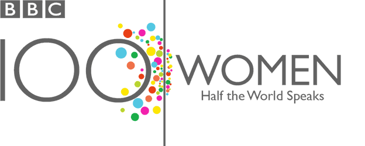

BBC News 100 Women - category live event
The BBC's 100Women season shone a light on women's rights and experiences around the world through a series of programmes and reports across 3 weeks. The season launched with a powerful data visualisation and ended with a widely shared page of interactive maps that allowed users to explore gender gap issues across the world, all tied into the BBC's first global women's event on 25th October.
The event featured 100 astonishing women, from the high-profile politician to the stay-at-home mum, all interacting with our global audience of 256 million.
Our special site streamed eight hours of live TV and radio debates, supported by live-blogging and live-tweeting in many of the 27 languages the BBC broadcasts in. Many of our language services hosted Google+ Hangouts, including our Vietnamese, Spanish, Persian, Arabic, Russian, Kyrgyz, and Swahili, and this fed into the rich and varied community and content generated by the event.
#100Women was used throughout October, peaking on 25th October when it trended on Twitter in London at the start and was picked up across the world - from Asia, to Africa and throughout Europe.
We are continuing to build on the success of 100Women, following some of the eight pairs of mentors and mentees we matched at the event, including the story of the Bangladesh textile factory owner and her Cambodian mentee, who grew up on a landfill and wants to be a fashion designer.
Since meeting in October, the 100Women have created an online community and many have returned to the BBC airwaves, continuing to enrich the BBC's online and broadcast content.